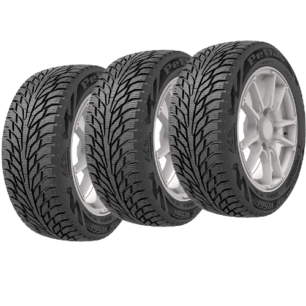
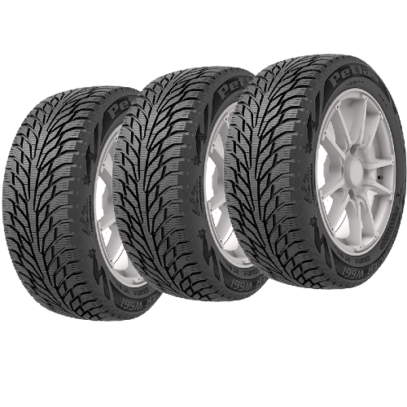

Lastikler Hakkında Herşey
Türkçe

Lastikler Hakkında Herşey
Türkçe


Michelin Uptis (Unique Puncture-proof Tire System), lastik teknolojisinde devrim niteliğinde bir inovasyondur. Geleneksel pnömatik lastiklerin aksine, Uptis tamamen havasızdır ve bu sayede patlama, delik veya hava kaybı gibi sorunları ortadan kaldırır. Bu yenilik, hem sürücüler için daha güvenli bir sürüş deneyimi sunar hem de çevresel sürdürülebilirliği artırır.
Michelin ve General Motors iş birliği ile geliştirilen Uptis, 2024 yılında ticari olarak piyasaya sürülmesi planlanmaktadır. Bu yenilikçi lastik, ilk olarak elektrikli ve otonom araçlarda kullanılmak üzere tasarlanmıştır. Uptis, otomotiv endüstrisinde sürdürülebilirlik ve güvenlik standartlarını yeniden tanımlamaktadır.
Gelecekte, Uptis'in daha geniş bir araç yelpazesinde kullanılması ve bu teknolojinin daha da gelişmesi beklenmektedir. Michelin, bu inovasyonla birlikte hem çevresel etkileri azaltmayı hem de sürücülere daha güvenli ve ekonomik bir lastik çözümü sunmayı hedeflemektedir.
Michelin Uptis, hem mevcut ihtiyaçlara cevap veren hem de geleceğin taşıma çözümlerine yönelik önemli bir adımdır. Bu yenilik, otomotiv sektöründe köklü değişimlerin habercisi olarak büyük bir ilgiyle takip edilmektedir.

 
